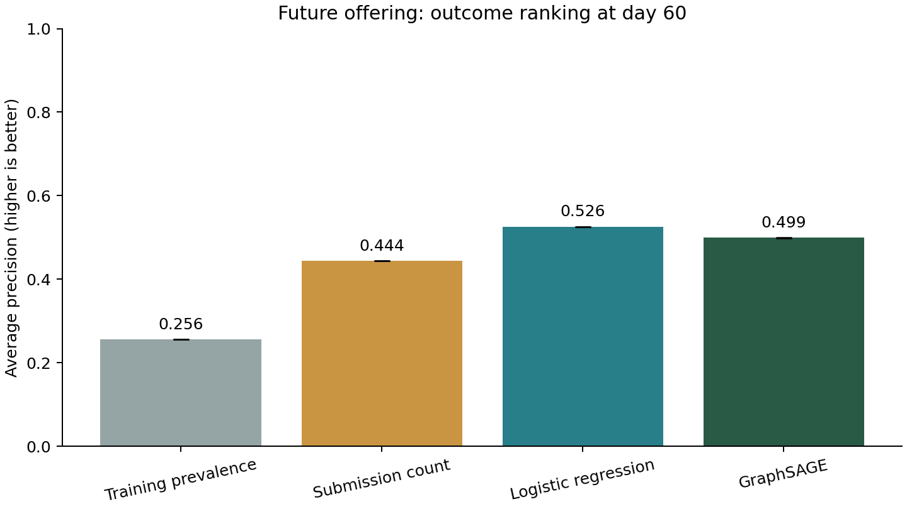
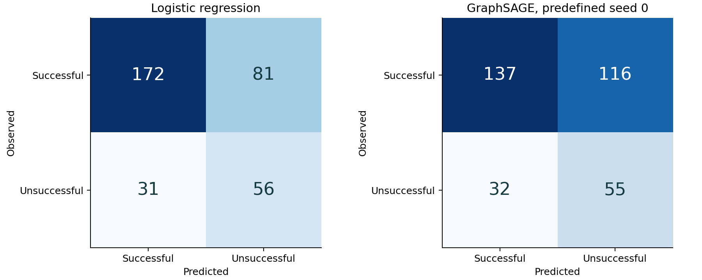

Learning from the OULAD graph
Session 6 · counts, logistic regression, GraphSAGE and TransE
21 checks passed. The historical facts remain separate from learned estimates. Models use the same M2ENV as the labs.
Original counts · Outcome prediction · Hidden links · Limits · Evidence
1. What are the initial counts?
The historical AAA graph has 748 enrollments: 531 successful and 217 unsuccessful. Successful means Pass/Distinction; unsuccessful combines Fail/Withdrawn. These labels describe outcomes, not permanent traits of people.
At day 60, 701 enrollments remain eligible after excluding 47 already withdrawn/not-yet-registered records. Training uses 335 eligible 2013J enrollments after removing 26 with student IDs also present in 2014J. The independent 2014J test has 340 enrollments: 253 successful and 87 unsuccessful.
Compare predicted counts with that same test population. A prediction total should not be compared directly with all 217 historical unsuccessful enrollments. Even an exactly matching total could identify the wrong people; the confusion matrix exposes this.
2. Counts versus outcome models
Question: among enrollments still registered at day 60, can early observations rank eventual Fail/Withdrawn outcomes? Inputs are previous attempts, registration day, submission count, late-submission count and last submission day through day 60. Grades, final results, future withdrawal dates, later submissions, IDs as numerical features, and inferred outcome classes are excluded.
Training prevalence predicts the training majority class for everyone. The submission-count rule ranks fewer observed submissions as higher risk and predicts unsuccessful only when the count is zero. Logistic regression learns a weighted combination of the row features. Two GraphSAGE layers combine those same enrollment values with neighboring early-submission assessment nodes; node features include assessment type, scheduled deadline and weight. Training and test use separate graphs and no shared students.

GraphSAGE mean AP is 0.499 (range 0.498–0.501), lower than logistic regression (0.526). This is a comparison on one future offering, not evidence of general superiority.
| Model | Seed | AP | Balanced accuracy | Precision | Recall | Predicted unsuccessful |
|---|---|---|---|---|---|---|
| Logistic regression | 0 | 0.526 | 0.662 | 0.409 | 0.644 | 137 |
| Training prevalence | 0 | 0.256 | 0.500 | 0.000 | 0.000 | 0 |
| Early submission count | 0 | 0.444 | 0.574 | 0.714 | 0.172 | 21 |
| GraphSAGE | 0 | 0.498 | 0.587 | 0.322 | 0.632 | 171 |
| GraphSAGE | 1 | 0.499 | 0.630 | 0.360 | 0.667 | 161 |
| GraphSAGE | 2 | 0.501 | 0.631 | 0.348 | 0.736 | 184 |
Actual unsuccessful test count: 87. AP summarizes the ranking, and the constant-score reference is the test positive fraction (0.256). AP is average precision, not trapezoidal PR-AUC. Precision answers how many flagged enrollments are truly positive; recall answers how many actual positives were found. Balanced accuracy gives both classes equal weight. Classifiers use a fixed 0.5 threshold, not one tuned on test results. Class weighting means the output scores are not established calibrated risk probabilities.

Rows are observed outcomes; columns are predictions. Top-right counts are false positives; bottom-left counts are missed unsuccessful outcomes. Seed 0 is shown because it was predefined, not because it performed best. All seed results appear above and in the downloadable tables.
3. Why leakage and splits matter
The deliberately invalid control feeds the outcome label itself to logistic regression. Its perfect ranking demonstrates how easy it is to get a misleading result; it is excluded from model selection. Three random enrollment splits are also saved as diagnostics. They mix years and can share students, so they do not answer the future-offering question. Each GNN is trained without held-out nodes in its training graph; evaluation may use unlabeled peers from its own held-out cohort.
Features are imputed and scaled using training rows only. Hyperparameters, seeds and epochs are recorded in the protocol before model fitting; no test-dependent selection is performed. The three GraphSAGE seeds vary initialization on the same temporal test. Their spread is not a population confidence interval.
4. Does TransE beat the popularity count?
There are 3,107 distinct nonbanked historical enrollment → assessment links, after excluding 42 banked records. For each seed, 80% train, 10% validation and 10% test are selected at the link level (rounded down for validation and test). Validation is reserved; there is no early stopping or tuning. The model also sees offering membership and assessment types, but no assessment-record nodes, scores or outcome facts that could reconstruct a hidden edge directly.
TransE learns vectors so head + relation lies near tail. The baseline ranks assessments by their training submission counts. Both rank the same six scheduled assessments in the enrollment's offering, including the exam with no observed result links. This is a historical reconstruction exercise, not prediction of future submissions or a recommendation.

| Seed | Hidden links | Count MRR raw | TransE MRR raw | Count MRR filtered | TransE MRR filtered | Mean filtered candidates |
|---|---|---|---|---|---|---|
| 0 | 310 | 0.477 | 0.226 | 0.985 | 0.913 | 2.25 |
| 1 | 310 | 0.460 | 0.232 | 0.979 | 0.937 | 2.23 |
| 2 | 310 | 0.494 | 0.228 | 0.987 | 0.930 | 2.20 |
TransE's mean filtered MRR is below the popularity baseline in this run. MRR averages 1/rank: rank 1 gives 1, rank 2 gives 0.5. Hits@1 and Hits@3 are in the summary and per-seed reports. Ties use the average (realistic) rank; raw entity IDs never break a score tie.
Unfiltered evaluation ranks all six candidates. Filtered evaluation removes other known true links using the original truth only during scoring. Many students already submitted most assignments, leaving few candidates; therefore filtered scores can look high even for simple baselines. The plots include a random-ranking expectation for those exact candidate-set sizes. Exam non-observation is not proof that exams were not taken. Sampled unobserved links in training are contrasts, not verified negative facts.
5. What these results establish
The outcome experiment tests transfer from one earlier offering to one later offering with repeat-student separation. The link experiment tests reconstruction of masked historical edges. Neither establishes causal effects, performance on another module, or suitability for operational student decisions. AAA has few shared assessment nodes; a GNN may add little beyond submission counts. No click activity was loaded. Submission and registration dates are used as availability proxies because the release has no ingestion/revision log. Scores are excluded because grade-publication timestamps are absent.
Predictions remain separate files and do not overwrite source outcomes, OWL memberships or validated historical facts. The existing ontology reasons from known facts; the learning models estimate unknown labels or missing links and can be wrong.
6. Open the evidence
- All classification metrics, including random splits and invalid control
- Per-enrollment predictions
- Logistic coefficients
- Label-free learning RDF and cohort counts
- Per-link ranks and all link metrics
- Complete run summary, checks, provenance, input/output fingerprints
Run b26d51892dff4a4bb42ac213d217fcac
Started 2026-10-17T05:15:12.800480+00:00
Checks completed 2026-10-17T05:16:17.568035+00:00 (UTC). Figures use actual measured results.